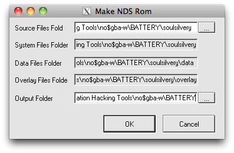

Fourth and Fifth Gen Etiquette
Thursday, February 24, 2011
An introduction to everything new in the fourth gen and how things have changed since third gen hacking! NARC files confuse you? READ THIS. NARC files don’t actually confuse you that much? Whatever.
Alright well, before we get started, I’m just going to tell you straight up to go download my hacking tool pack for fourth generation. It’s under “Downloads” which can obviously be clicked on above
Got everything downloaded? Okay. Now, do you have a NDS ROM? I’d recommend you rip yourself a HG/SS one for the sake of this tutorial, but if you’re unable to, you should still be able to pick up the general idea by reading, but you will not be able to follow along, at least, not as long as the .narc files go. Which come on, that’s totally why you’re reading this, isn’t it?
So, let’s pop open that download pack that you definitely just downloaded. More specifically, let’s pop open KiwiEditor (it’s right in the root of the folder):
Got it? Good. Kiwi will allow us to unpack the ROM, but we’re just browsing today. Okay, so, go to File -> Open and select your (HGSS) nds ROM.
Yay! This is much like Windows Explorer, or Finder now. You’re viewing the files that you have loaded into Kiwi. Now, double click on your .nds file (in my case, soulsilvery.nds)
This window will appear! Like I said before, just like windows explorer, this is a file browser. Click on the plus sign next to the ROM name and you will view its contents, much like that of a folder.
So, this is it. Each .NDS file is kind of like a .zip file, or .rar, or any kind of archive. There are files within it that allow it to function. Kiwi, among some other programs, allow us to view these internal components.
But why do you care?
Well, this is where fourth and fifth gen hacking differ from third generation hacking. In third gen, you would simply load the entire .GBA file in whichever editor you needed and you would just save that file like any other. As .NDS files are so large, however, the process determined for them is to unpack, or unarchive, much like unzip, the files within the .NDS file. These little bits each have a role– some files within the .NDS file will contain all of the in game text for example, while others will contain the script, or the pokémon sprites, or something of the like.
Feel free to do some poking around. In HGSS, all of the NARC files aren’t actually called NARC files. They’ve all been reorganized and place into this directory called “a” in the data directory, but they function just like the NARC files in Diamond or Pearl.
Woah wait, what’s a NARC file? Narc stands for Nintendo Archive, which makes it a lot less confusing. again, much like a zip file, these too contain smaller components. Nintendo put an archive in yo archive so you can archive while you archive.
Navigate to /data/a/0/8/1 and tick the check box, assuming you’re using a HGSS ROM. If not, look up the equivalent in the readme.txt file I’ve included for Diamond, Pearl, or Platinum. (it’s in msgdata/msgdata.narc incase you’re too lazy...)
Now click the farthest left icon that kind of looks like a piece of paper. This will extract the contents of a/0/8/1.
Wat. Where dey go? If you’ll kindly open up folder where your nds rom/roms reside...
You’ll notice there’s a new folder with the same name as your ROM! Click through this folder, and you’ll find a similar file system layout to the one you just navigated:
Now, unless you’ve checked already or are familiar with it, you may not know that the NARC that we just extracted contains the events. This includes the overworld sprites, which can be edited with BTX editor. But... wait. BTX editor.... edits .BTX files, doesn’t it? I’m not going to go into detail on BTX editor, but you do need to get the BTX files out of this narc in order to edit them. How do we do this?
Why, open the file in Kiwi editor! Kiwi also opens and extract NARC archives! Go to the main Kiwi screen and select open just as you did before, but this time, be sure to adjust the file type at the bottom:
Select all files (normally the NARC file would be recognized, but as HGSS uses a different NARC naming system, you must do this to tell the program that your NARC file isn’t a .narc. So anyway, open the 1 file in romname/data/a/0/8/:
And it will be added just like your .nds file.
And as you would expect... Clicking it reveals...

All of those yummy .BTX and etc files! You can then check the box next to the ones you want to extract to edit, (or check all at the top to get a nice index going) and they will be extracted to the same folder as the narc initially was. And those BTX files can be opened with BTX editor! (Try this out yourself– the BTX file with the number 70 is the female hero, for example).
Alright, so this is all very nice... but after you’ve gone through all of this... How do you go back to your simple .nds file? Well, there are two things that we have extracted. The NARC file was unpacked, and so was the NDS file. So you need to repack your NARC file with the modified inards (ie. the modified BTX file) and then from there, repack all of it back into a .nds, which you can then play in your emulator.
I wouldn’t be too concerned about decompiling and recompiling your ROM– when you work in PPRE (which you mostly likely will be doing... all of the time...) The “set rom” feature creates a full scale extraction of the .nds file in the folder “tmp_romname.” LIkewise, it can also be compiled at the end with “write rom.” You can use kiwi on the extracted files from ndstool or PPRE and then do the final compiling with PPRE or ndstool.
So, to remake the NARC file. (I would suggest opening a BTX and editing it in BTX editor at this time– most likely the hero sprites located at 1_69 and 1_70 .BTX respectively. If you don’t want to make your own or modify the current ones, you can use my own template from third gen as a test.) Head to the main screen of kiwi and select Tools -> Make NARC file
{kind=link}
It will then prompt you for what the input files will be, and where the output location is. You should fill both of these values in with the romname/data/a/0/8/ folder, like so:
And, of course, click OK. I always include the FNTB, so check that box. Now this is actually a little confusing. Kiwi didn’t ask for a file name. It will always save the newly made narc as the last folder in the output .narc (so in this case, 8.narc), and it will be in the location you told it, or the same one with all of the 1 contents and .BTX files. So, at the very bottom of my data/a/0/8/1 folder is this:
Now, 8.narc is simply your edited “1” file. the “1” file is also in this directory, however, so you must delete the “1” file and then rename 8.narc to “1”.
You don’t really have to worry about saving the original “1” file, instead I would suggest you back up the original .nds and just re-extract it if something goes horribly wrong during editing/compiling of a narc.
Once you have renamed the 8.narc file to 1 (in hgss), go back to the tools menu in kiwi and select make nds file.
Then fill out the fields appropriately:

As you may have noticed, in my example, I have selected the same output folder that the ROM is in. Because of this, my old ROM will be overwritten. You can avoid this by backing up the original nds file, renaming the rom folder, or selecting an output folder different than the one the original rom resides in. (The name of your new rom will be the same name as the last source directory– which in this case is the same as our rom causing it to be overwritten).
Click OK and that’s it! Run your new ROM and you should see the changes made!
Do note that most of the time you will probably use PPRE or NDSTOOL to repackage the NDS file (both of which don’t always default to overwriting the old rom as kiwi does).
Happy hacking!
VGMoose